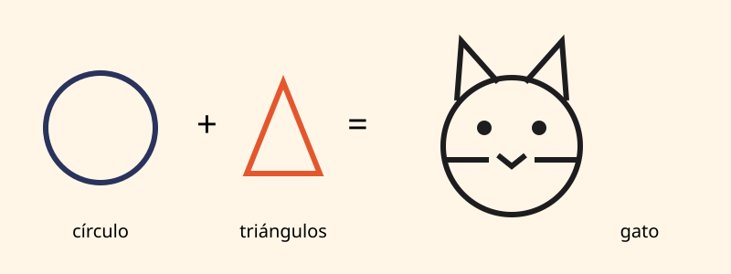
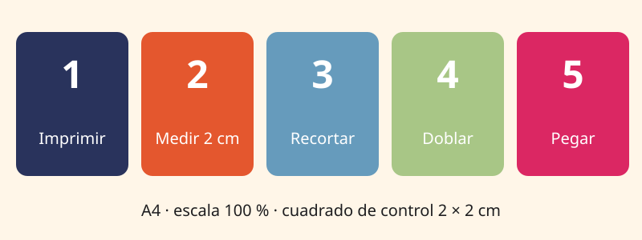

post
Cómo dibujar paso a paso: materiales y técnica para principiantes
27/10/2026
Qué materiales usar, cómo construir un dibujo con formas simples y cómo practicar con los tutoriales del canal.
Guías útiles para dibujar, armar moldes y conocer el arte experimental.

27/10/2026
Qué materiales usar, cómo construir un dibujo con formas simples y cómo practicar con los tutoriales del canal.

27/10/2026
Imprimí al 100 %, controlá la escala, recortá, doblá y pegá la casita y el robot Bulón sin que se deformen.
27/10/2026
Una definición simple, los movimientos que lo marcaron en el siglo XX y cómo probarlo en casa con materiales comunes.